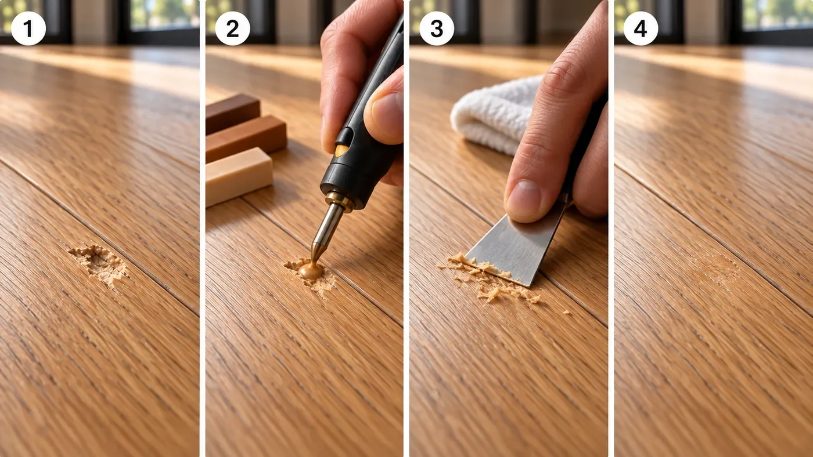
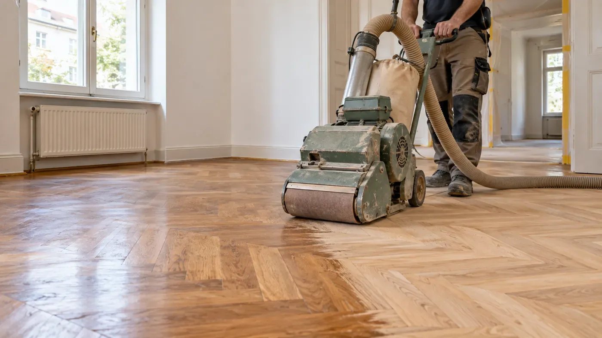

Parketi taastamine / Tallinn ja Harjumaa
Paranda. Taasta.
Hoia head põrandat.
Väike täke võib vajada kohtparandust, ühtlaselt kulunud põrand aga lihvimist ja uut viimistlust.

Täkete parandus
kuumvahaga.
Üksiku täkke, lohu või sügavama kriimustuse saab sageli täita parketi tooniga sobiva kõvavahaga. Kahjustus puhastatakse, täide sulatatakse, tasandatakse ja viimistletakse.
Parandatud koht ei pruugi lähedalt vaadates olla täiesti nähtamatu. Toon, muster ja läige võivad valguse käes erineda.
Millal kuumvahast ei piisa?
Vaha ei lahenda konstruktsioonilist probleemi, lahtist lauda ega niiskusest paisunud põrandat. Vajalik võib olla elemendi vahetamine või suurem taastamine.
Lihvimine ja
uus viimistlus.
Lihvimine sobib suurema pinna kulumise, kriimustuste ja tuhmunud viimistluse korral. Eemaldatakse vana viimistlus ning õhuke puidukiht, seejärel kantakse peale kokkulepitud lakk või õli.
Täispuit- ja kihilise parketi lihvimise võimalus sõltub jääkpaksusest ning varasematest töödest. Laminaati ja LVT-d ei lihvita.

Küsimused ja vastused
Parketitööd.
Selged vastused.
Kus parketitöid tehakse?
Parketi ja laminaadi paigaldust, aluspinna ettevalmistust ning parketi parandustöid pakume Tallinnas ja Harjumaal. Objekti asukoht ja tööde ulatus täpsustatakse päringus.
Millest kujuneb parketi paigalduse hind?
Hind sõltub pindalast, paigaldusmustrist, aluspinna seisukorrast, vana katte eemaldamisest, liistudest ja üleminekutest. Täpne hind ja töömaht lepitakse kokku pakkumises.
Kas laminaati võib paigaldada põrandaküttele?
Sobivus sõltub konkreetsest põrandakattest ja alusmaterjalist. Kontrollida tuleb tootja lubatud temperatuuri, soojustakistust ning aluspinna niiskust.
Kui kaua peab materjal enne paigaldamist ruumis seisma?
Aklimatiseerimise aeg sõltub tootja juhendist. Paljude laminaatide puhul on tavapärane vähemalt 48 tundi, kuid määrav on konkreetse toote juhend ja ruumi sisekliima.
Kas kriimustatud parkett tuleb välja vahetada?
Üksiku täkke või lohu korral võib sobida kuumvahaga kohtparandus. Kulunud viimistlusega puitparketti saab mõnikord lihvida; võimalus sõltub kulumiskihi paksusest ja põranda seisukorrast. Laminaati ja LVT-d ei lihvita.
Mida hinnapäringusse lisada?
Lisa pindala, põrandakatte tüüp, objekti asukoht, soovitud aeg ning ruumi ja aluspinna fotod. Kahjustuse puhul lisa üldvaade ja lähivõte. Fotod saad edastada e-postiga.
Sinu kodu järgmine samm
Hea põrand algab
heast plaanist.
Räägi oma ruumist ja soovitud põrandast.
Aitame lähteülesande selgeks teha.
Saada oma põranda mõõdud ja soovid, et saaksime koostada pakkumise.